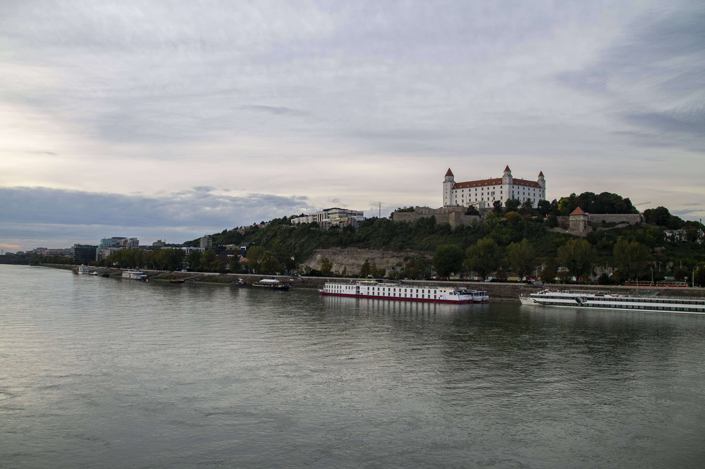
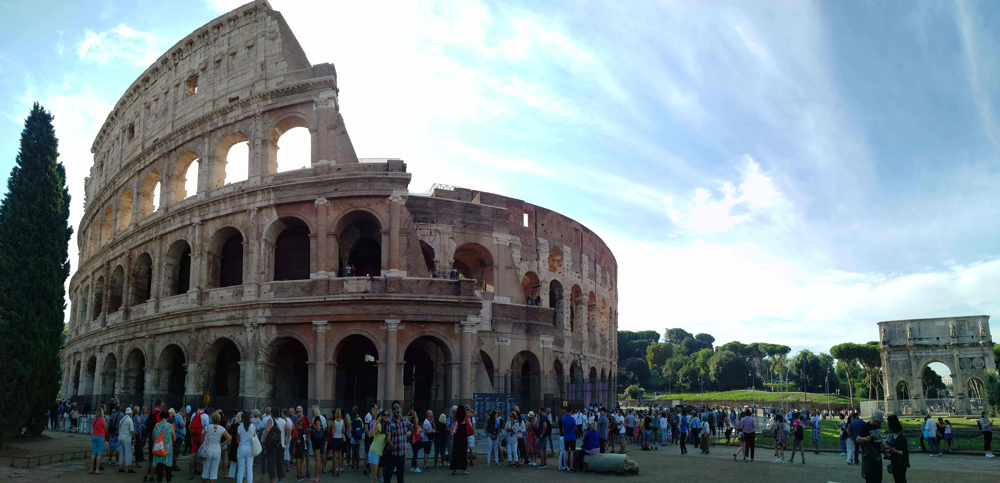
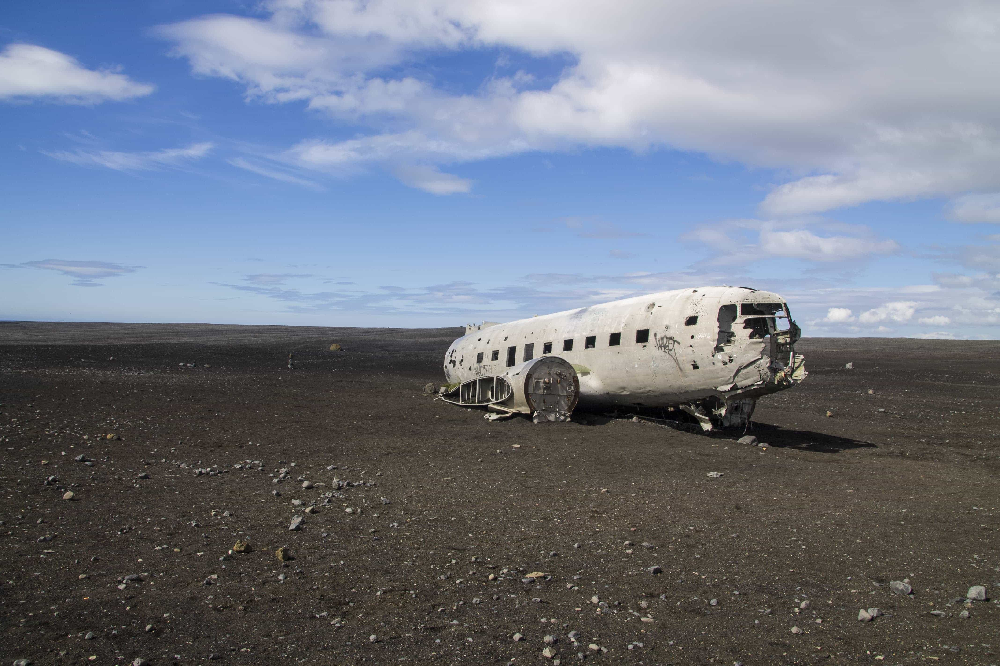
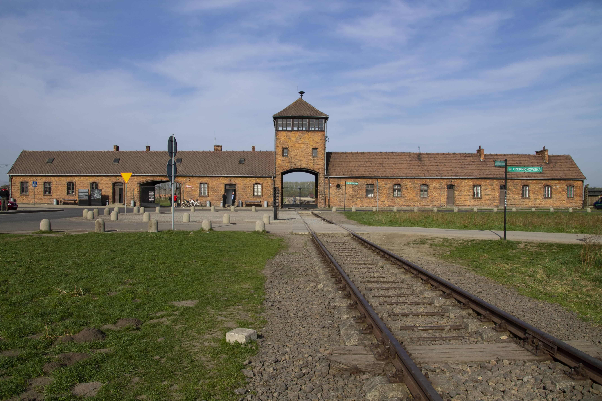

My trips
Warsaw (Poland)
November 2019
Configuring linux distributions (Ubuntu, OpenSUSE) and software (MapServer, MapCache, Apache, Nginx, Docker, git, MediaWiki)
Bratislava (Slovakia)
September 2019
Configuring linux distributions (Ubuntu, OpenSUSE) and software (MapServer, MapCache, Apache, Nginx, Docker, git, MediaWiki)
Kiev, Chernobyl (Ukraine)
April 2019
Configuring linux distributions (Ubuntu, OpenSUSE) and software (MapServer, MapCache, Apache, Nginx, Docker, git, MediaWiki)
Roma, Vatican (Italy)
September 2018
Configuring linux distributions (Ubuntu, OpenSUSE) and software (MapServer, MapCache, Apache, Nginx, Docker, git, MediaWiki)
Whole Iceland (Iceland)
July, August 2018
Almost one month on the beautiful island in the Europe. Iceland has many Vulcans, geysers, hot springs, glaciers, waterfalls and animals like seals and puffins. It is place, where are popular tourist destinations but somewhere are places where the human foot didn’t step in. I must come back because I didn’t see everything.
Auschwitz (Poland)
May 2018
Two days in the place of the worst genocide of WW2. In the concentration camp Auschwitz was murdered over one million people in gas chambers.
